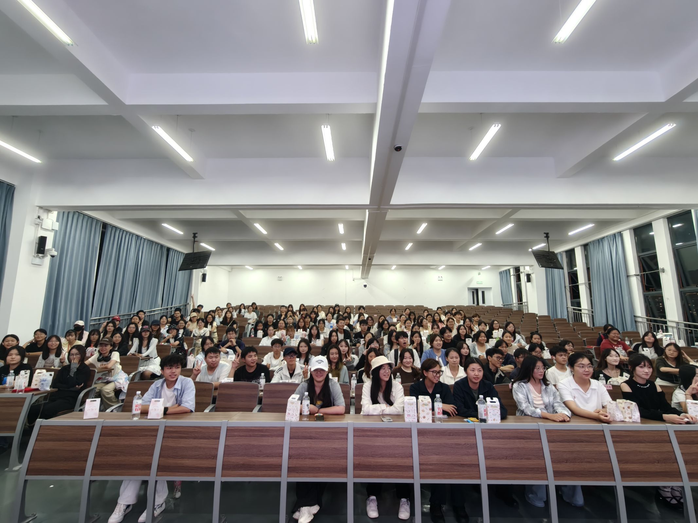
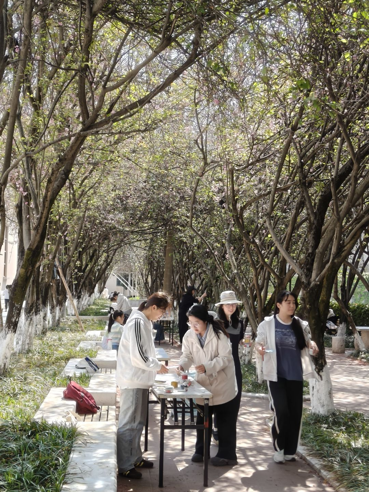
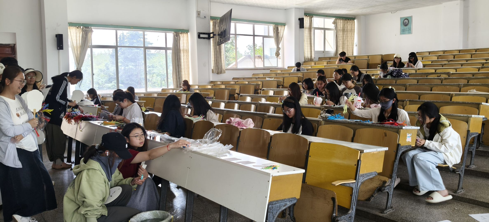
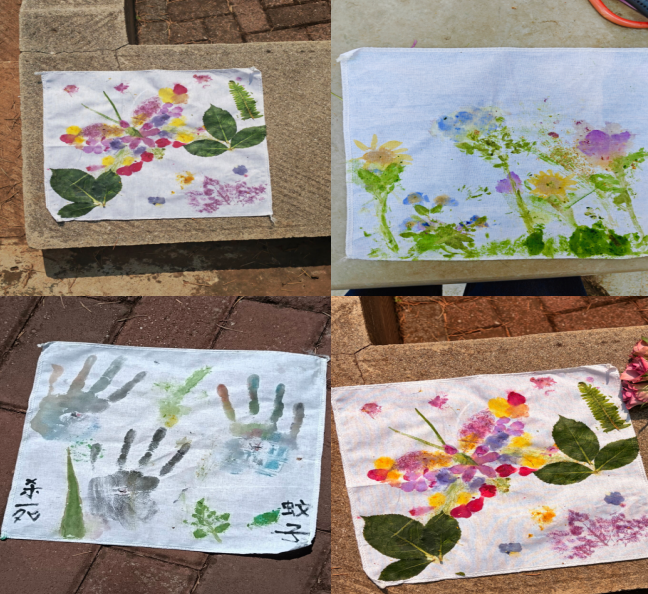
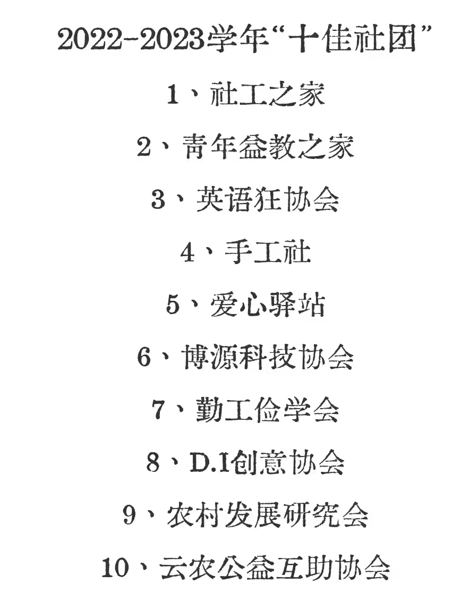

办公室
负责活动策划案、活动申报及活动总结的编写，统筹活动流程与相关文档管理。

YUNNAN AGRICULTURAL UNIVERSITY · SINCE 2016
校级优秀社团 · 云农十佳社团
以手造物，以艺传情
让传统非遗、潮流创意与自然灵感，在一双双年轻的手中重新发生。
ABOUT THE CLUB
技能教学 + 亲身实践 + 作品展览
本社团成立于 2016 年，是云南农业大学老牌文化艺术类学生组织，也是校内唯一专注手工创作的校级社团。社团以“以手造物、以艺传情”为宗旨，弥补校园传统手工艺实践平台的空缺，面向全校师生打造集学习、创作、交流、展示于一体的手作阵地。社团成立次年获评校级优秀社团，并在 2022 至 2023 学年荣获校园十佳社团称号。
社团长期开展国风传统手作，包括剪纸、绳结、古风发簪、衍纸、竹编等；也开展奶油胶、超轻黏土、滴胶、石膏彩绘、串珠饰品等零基础潮流手作，以及干花相框、草木拓印、废旧材料改造等自然环保类手作。社团还开展简易刺绣、热缩片工艺等项目，重点深耕本土非遗手工，定期举办手工大赛、环保主题创作与公益手工活动。
社团常年稳定吸纳百名左右社员，零基础同学与资深创作者均可参与。近年来，社团围绕传统非遗手工艺创新与发展推进建设，形成“技能教学+亲身实践+作品展览”三位一体的活动特色。
剪纸、绳结、古风发簪、衍纸、竹编、刺绣
奶油胶、超轻黏土、滴胶、石膏彩绘、串珠饰品、热缩片
干花相框、草木拓印、废旧材料改造与环保主题创作
EIGHT STUDIOS
从活动统筹到具体工艺，每一个部门都让创意真正落地。
负责活动策划案、活动申报及活动总结的编写，统筹活动流程与相关文档管理。
负责活动现场拍摄和后续整理、新闻稿撰写，以及海报、易拉宝、宣传单、邀请函等宣传品的设计制作。
负责纸艺类手工活动的策划组织，包括活动方案设计、材料费用预算规划及采购执行。
负责软陶类手工活动的策划组织，包括活动方案设计、材料费用预算规划及采购执行。
负责滴胶类手工活动的策划组织，包括活动方案设计、材料费用预算规划及采购执行。
负责模型类手工活动的策划组织，包括活动方案设计、材料费用预算规划及采购执行。
负责针织类手工活动的策划组织，包括活动方案设计、材料费用预算规划及采购执行。
负责刺绣类手工活动的策划组织，包括活动方案设计、材料费用预算规划及采购执行。
MADE BY HAND
从一张纸、一段线、一捧泥开始，把想象慢慢做成可以触摸的作品。
RECENT ACTIVITIES
把非遗、环保与耕读文化带进真实的校园生活。
活动面向全校学生，现场提供全套手工材料并安排专人教学。参与者裁剪、装饰废塑料瓶进行创作，以变废为宝的实践传递低碳环保理念，兼具趣味性与环保教育意义。
环保创作活动面向全校师生，以竹条编织作画为核心内容，融合传统非遗竹编技艺与现代文创。参与者沉浸式完成手工创作，亲手编织作品，近距离感受东方竹艺美学，推动传统手工艺活态传承。
非遗竹编
本次非遗岩彩体验面向全体师生，参与者可亲手研磨矿物颜料、以古法敷彩创作。活动依托岩彩非遗技艺，融合传统壁画与现代文创，以沉浸式手工体验助力非遗活态传承。
查看微信公众号报道
活动面向全校师生，以传统盘扣手工制作为核心内容，带领参与者拆解纹样、缝制专属胸针。活动融合传统服饰非遗美学与现代配饰设计，让大家近距离感受中式传统纹样魅力。
服饰非遗
本次耕读文化节活动由寻野昆虫社联合手工社举办，以昆虫辨识、植物拓印为核心内容，融合耕读科普与手工创作，兼具知识、实操与艺术价值，让学生动手感受自然生机、体悟耕读文化内涵。
自然拓印HONOR OF THE CLUB
社团成立次年获评校级优秀社团，并在 2022 至 2023 学年荣获校园“十佳社团”称号。每一份认可，都来自成员们一次次耐心教学、专注创作与真诚分享。
校级优秀社团 · 云农十佳社团